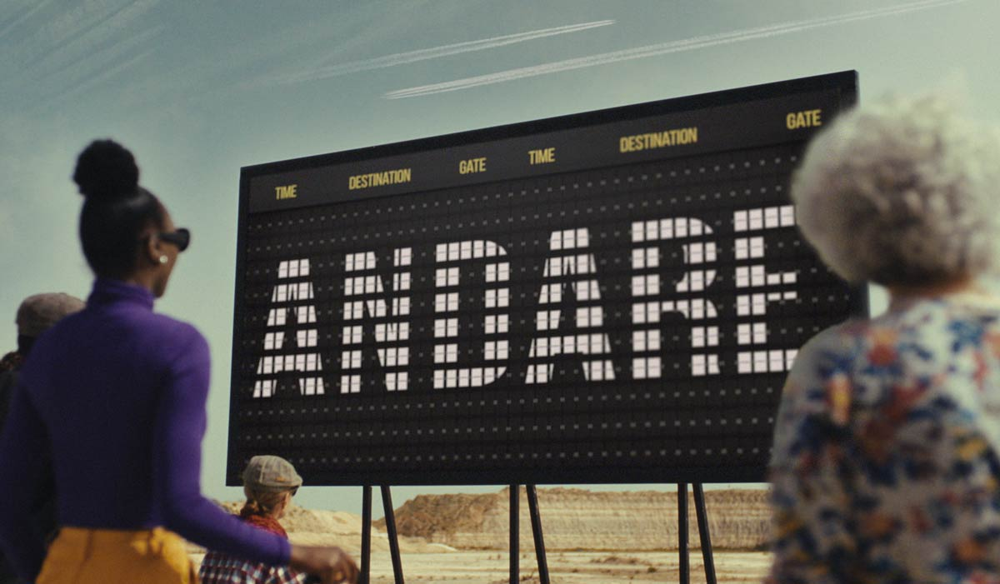

La odisea de David Bisbal en ‘Un día sin aeropuertos’
Aena reivindica el valor de su red aeroportuaria con una canción adaptada y un videoclip. El cantante canta Andaré, una sorprendente versión de Volare, popularizada por los Gipsy Kings
Qué pasaría si un día te despertaras y descubrieras que los aeropuertos han desaparecido? Imagina un mundo donde las reuniones familiares, los negocios y congresos internacionales, las giras mundiales y las ansiadas vacaciones se desvanecen porque no hay vuelos que nos conecten.
En este escenario, Aena nos invita a soñar despiertos y a reflexionar con su campaña "Un día sin aeropuertos", protagonizada por David Bisbal. En un despliegue de creatividad, Bisbal nos muestra un mundo caótico en el cual no podría realizar sus giras de conciertos, como en la que se encuentra inmerso actualmente, el Tour Volaré 2024.
La magia de la conexión
En el videoclip, el artista almeriense canta una versión exclusiva de Volare –popularizada por los Gipsy Kings– titulada Andaré, cuya letra, adaptada especialmente para la campaña, refleja su odisea con un toque de humor y resignación.
A través de esta campaña, Aena destaca que los aeropuertos son mucho más que puntos de partida y llegada; son arterias vitales que conectan el mundo y lo mantienen en movimiento. Las infraestructuras aeroportuarias no solo facilitan el transporte de personas, sino también el flujo de mercancías esenciales como los medicamentos o los órganos para trasplantes.
“
Los aeropuertos son mucho más que puntos de partida y llegada; son arterias vitales que conectan el mundo
“De improviso el aeropuerto desapareció
y me hizo andar en el suelo infinitoooo
Andare, oh oh
Andare, oh oh oh oh
Me va a costar la salud
Andando, qué lejos estás tú”
La economía se resentiría
S in aeropuertos, la economía se vería seriamente afectada, se perderían empleos y el desarrollo de los países se estancaría. Los aeropuertos son centros de innovación y progreso, y su desaparición sería un duro golpe para el tejido social y económico de cualquier nación.
Más allá del impacto económico, la campaña de Aena subraya el poder de los aeropuertos para conectar culturas y personas. Sin ellos, perderíamos la oportunidad de conocer tradiciones y lenguas, y experimentar nuevas vivencias. La diversidad cultural que encontramos en cada viaje nos enriquece y nos hace más tolerantes y comprensivos. Los aeropuertos permiten acceder a un mundo más amplio y diverso, y su existencia facilita la conexión y la comunicación humanas.
“
La diversidad cultural que encontramos en cada viaje nos enriquece y nos hace más tolerantes y comprensivos
El cantante, en el escenario que simula un aeropuerto... sin aeropuerto
Una aventura
Con su carisma y energía, David Bisbal interpreta Andaré en un videoclip que no solo es una pieza musical, sino una auténtica aventura cinematográfica. El vídeo, filmado en las localidades de Tembleque (Toledo) y Pedraza (Segovia), muestra un mundo donde los aeropuertos han desaparecido, dejando a la sociedad sumida en la confusión. ¿Imaginas un día sin aeropuertos? Bisbal no; lo considera una auténtica pesadilla, un marrón.
“
'Un día sin aeropuertos" sería una auténtica pesadilla

“Y pudiendo ir volando, volando
Por qué tengo yo que ir andando, ¡qué cruz!
¿Dónde está el aeropuerto? No entiendo qué hacemos aquí
Yo no quiero una gira sin vuelos, es un sinvivir
Andare, oh oh
Andare, oh oh oh oh
No llego, menudo marrón, qué tranqui que iría en avión”
Créditos
Producción: Edicions Clariana | Redacción: Gemma Martí | Diseño: Martí Palma | Maquetación: Enric Abad | Fotografías: Aena | Un proyecto de Brandslab. Godó Vertical Media